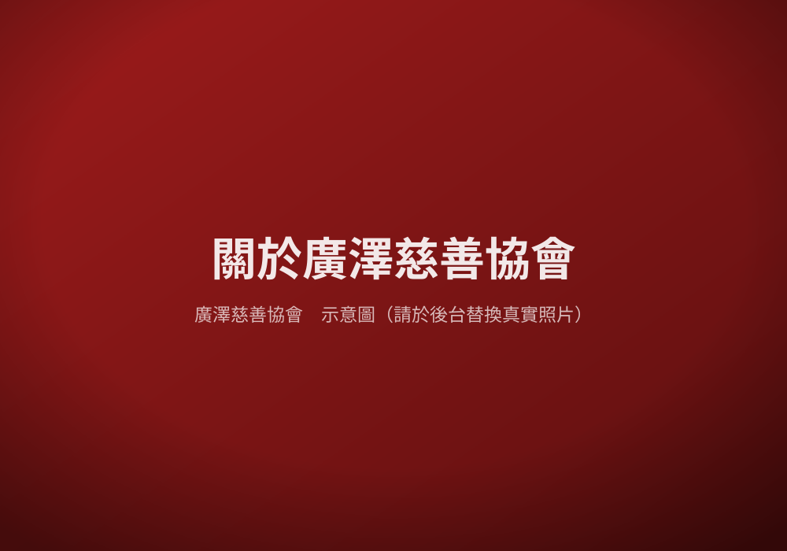

關於我們
一群相信善能循環的人，在新竹默默耕耘十餘載

我們是誰
廣澤慈善協會源於一份單純的心願——讓在地的弱勢家庭，不再為三餐溫飽而憂愁。我們以「取之社會、用之社會」為宗旨，將來自各界善心人士的愛心，化為實實在在的物資與服務，送到最需要的人手中。
多年來，我們服務的對象包括持有中低收入戶證明、身心障礙手冊的鄉親，並結合在地店家與社團的力量，提供超越物資的關懷。
我們的理念
把社會的善意，毫無保留地回饋給社會中最需要的人。
幫助不只是物資，更是讓每個人都被溫柔以待、被好好對待。
立足新竹，攜手在地店家與善心夥伴，讓愛心持續循環。
理事長的話
「感謝每一位善心人士，有錢出錢、有力出力，讓我們能年復一年地走下去。」
廣澤慈善協會理事長 曹禎祥表示，協會的每一份成果，都來自社會大眾的信任與支持。從一包白米到一次健康篩檢，背後都是無數善心夥伴共同成就的溫暖。
展望未來，協會將持續秉持初心，扶弱濟貧，讓「一世情」的精神，在新竹這片土地上不斷延續。